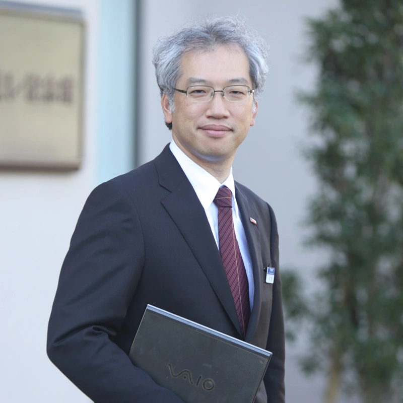

- HOME
- 研究・技術開発
- 未来を拓く研究者・技術者
- 本間 雅登
シニアフェロー本間 雅登

- 学位博士（工学）
- 所属複合材料研究所
- 専門分野複合材料設計
研究に対する想い
革新的な研究成果は新たな材料や機能を創出し、さらには従来技術からのパラダイムシフトを起こす原動力になります。企業理念「新たな価値の創造を通じて社会に貢献する」の核心部分を担うやり甲斐のある仕事です。高い目標に向かって挑戦し続けることは、決して容易ではありませんが、市場に魅力ある製品を送りだすことを夢見て、フロンティアスピリットで研究開発に取り組んでいます。
社外受賞歴
| 2006年 | 高分子学会賞 「新規複合化技術による高性能FRPの開発と工業化」 |
|---|---|
| 2008年 | 先端材料技術協会製品・技術賞 「モジュール型CFRP一体化成形品の画期的量産技術の確立」 Award of SAMPE Japan |
| 2008年 | 全国発明表彰 内閣総理大臣発明賞 「熱硬化性繊維強化複合材料の熱溶着技術、および一体化成形品」 |
| 2011年 | 四国地方発明表彰 四国経済産業局長賞 実施功績賞 「繊維強化複合材料用プリフォーム」 |
| 2012年 | 日本複合材料学会賞 「熱可塑性スタンパブルシートの研究開発」 Award of the Japan Society for Composite Materials |
| 2013年 | 文部科学省 科学技術分野に関する文部科学大臣表彰 「熱硬化性繊維強化複合材料の熱溶着技術の開発」 |
| 2015年 | 四国地方発明表彰 特許庁長官奨励賞 実施功績賞 「速硬化型非ハロ難燃エポキシ樹脂プリプレグ」 |
| 2016年 | 四国地方発明表彰 文部科学大臣賞 「炭素繊維強化ポリプロピレン射出成形材料」 |